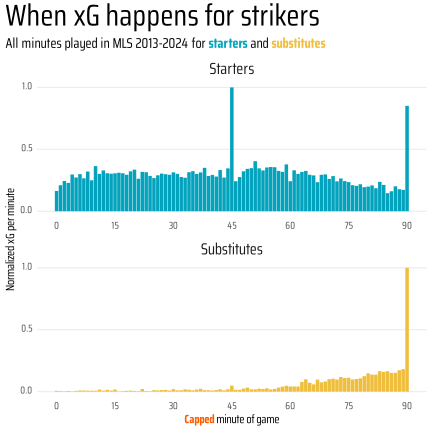

Stoppage time matters: how substitutions and using all minutes played affect player statistics
You might think that determining how much playing time a player receives would be rather straightforward, but it is not.
In soccer statistics there are two camps regarding how to determine how much time a player has spent playing. The first camp ignores stoppage time and caps each half at 45 mins for a total of 90 minutes played. The second camp instead decides that stoppage time is still part of the game and expands the minutes played to include that, too.
The 90 minute absolutists are dominant on most sites you’ll find data such as FBRef, TransferMarkt, Whoscored, or MLSsoccer.com. The argument here is that a soccer game is 90 minutes and any stoppage time in regular time will be exactly accounted for by the ref as added time.
The stoppage time matters crowd realizes that this is not actually true and also what about subs? If a player has been substituted into the game in the 90th minute should they only get credit for one minute of playing time even though there is more time played?
American Soccer Analysis has long been part of the stoppage time matters movement. This is why you will see that the minutes played per player you find on the interactive tables is always higher than what you will see at other data sources. Additionally, you will always see stats normalized to the expanded per 96 minute basis, assuming that games will, on average, have 6 minutes of stoppage time in the first and second halves.
There are many differences that can arise from using one way or the other to count minutes played and substitution effects. These have been chronicled multiple times, most recently by Michael Caley, but there is still ground to be covered exploring this further.
The gap between capped and expanded minutes is increasing
Substitutes show the largest difference between capped minutes and expanded minutes
As you might expect since expanded minutes come from stoppage time, substitutes are more affected than starters by the use of capped minutes rather than expanded minutes.
With increased game lengths, the difference between capped minutes and expanded minutes for starters remains relatively modest, reaching just over 10% for the first time in 2024. However, for substitutes, using expanded minutes resulted in around a 25% increase in minutes played prior to the introduction of VAR. This has increased to around 35% by 2024.
At an individual player level, the higher percentage of minutes that are played as a substitute correlate with a larger difference between capped minutes and expanded minutes. For players with a minimum of 200 minutes played, this difference can reach almost 50%.
While they should generally be ignored, players with fewer than 200 minutes played in a season can have some staggering differences between capped minutes and expanded minutes. FC Dallas’s Anthony Ramirez made one appearance at the end of regular time on July 20, 2024 and was credited with 1 capped minute. However, 13 minutes of second half stoppage time were played leading to a 1,200% difference in capped minutes and expanded minutes.
In practice, though, we don’t really care all that much about players that only make a handful of appearances in a season (except maybe wunderkind Cavan Sullivan with his 9 capped minutes and 19 expanded minutes). Setting a minimum of 500 minutes played that is potentially enough time to start making some non-confident assessments of players, these are the top ten players by difference between capped minutes and expanded minutes.
All 10 of the players with the largest differences between capped minutes and expanded minutes have come in the 2022, 2023, and 2024 seasons.
The common theme among these players is that they are largely attacking players that make the majority of their appearances and minutes as a substitute.
Topping the list is g+ favorite, Danny Musovski, who put up a 95th percentile g+ season in 2021 for LAFC. The Seattle forward had a 30% difference in capped minutes and expanded minutes in 2024 while making 20 of his 24 appearances as a substitute.
| Top 10 largest differences in capped minutes and expanded minutes | |||||||||
|---|---|---|---|---|---|---|---|---|---|
| MLS 2013-2024, minimum 500 minutes played | |||||||||
| Season |
Appearances
|
Minutes
|
|||||||
| Total | Start | Sub | Capped | Expanded | as Sub | Difference | |||
 |
Danny Musovski | 2024 | 24 | 4 | 20 | 503 | 656 | 57% | 30% |
 |
Georgios Koutsias | 2024 | 29 | 5 | 24 | 771 | 994 | 55% | 29% |
 |
Tom Barlow | 2024 | 28 | 5 | 23 | 733 | 941 | 53% | 28% |
 |
Jacob Murrell | 2024 | 27 | 6 | 21 | 867 | 1113 | 48% | 28% |
 |
Darren Yapi | 2024 | 30 | 5 | 25 | 727 | 929 | 51% | 28% |
 |
Tesho Akindele | 2022 | 27 | 4 | 23 | 589 | 749 | 58% | 27% |
 |
Daniel Aguirre | 2023 | 25 | 3 | 22 | 556 | 707 | 59% | 27% |
 |
Emerson Rodríguez | 2022 | 22 | 1 | 21 | 509 | 642 | 88% | 26% |
 |
Yamil Asad | 2023 | 21 | 5 | 16 | 514 | 648 | 36% | 26% |
 |
Edwin Mosquera | 2024 | 22 | 5 | 17 | 614 | 771 | 55% | 26% |
Substitutes’ minutes-normalized stats are better than starters
OK, so substitutes show the largest difference between capped minutes and expanded minutes, but so what? We don’t really care about minutes played on its own.
What really matters is what players do in the minutes they play. Across almost every offensive statistical measure, substitutes have higher per minute metrics than starters. This has been very well documented by Michael Caley for many stats, so for simplicity we will just focus on goals and expected goals.
For normalization we will use three different methods:
per 90’ : capped minutes normalized to 90 minutes per game
per 96’ : expanded minutes normalized to 96 minutes per game
per season’ : expanded minutes normalized to the average game length for each season to account for increasing game lengths in recent years
Even though game times have been increasing, there was little difference between the per 96’ and per season’ normalization methods, going forward we’ll only use the per 96’ method. Perhaps if game times get much longer, then this will have to be reevaluated.
per 96’ normalization removes the difference between starters’ and substitutes’ metrics for primarily offensive players
Overall, substitutes have higher per-minute metrics than starters, but this difference is not evenly distributed among positions.
To explain this we have to drill just a bit deeper. It’s been known since the dawn of analytics that teams that are winning tend to have fewer, but higher quality shots and more goals than teams that are losing. This has been confirmed many times since.
However, almost all of the public work looking at game states and shots was done in European leagues, was limited to a single season or team, and in some cases even predated expected goals. Since MLS is weird, we’ll look across all the 12 seasons available in the ASA era.
In short, previous reports are confirmed. Teams that are winning take fewer, but higher quality shots than teams that are losing or, to a lesser extend, tied. Additionally, teams in any non-tied game state score more goals than when tied, with teams up 2 or more running up the score even more.
However, for expected goals, losing teams generate more than teams that are tied or up one goal. The main difference between winning and losing team is that losing teams score fewer goals than expected, while winning teams score more. This has been often attributed to more space being available for winning teams to attack into as the losing team has to be more adventurous chasing the game. Of note, the ASA xG model does not have defender positioning to take this into account (although it does have many other factors that can infer it), and other models may not see this discrepancy.
With that taken care of, how does game state affect specific positions? Here we’ll look at how a starter’s xG per 90’ or per 96’ compares to substitutes brought into the game at different game states.
As was shown before, defenders have lower goals and xG than attackers. Substitute defenders and midfielders also show little difference between per 90’ and per 96’ methods whereas attacking substitutes do not get a boost when using per 96’ accounting.
However, the effects of game state are different between defenders and strikers, with substitute defenders contributing the most goals and expected goals when a team is losing compared to starters, and substitutes strikers doing so when winning. Midfielders are a bit of a jumble.
Let’s take a bit of a closer look at center backs and strikers to illustrate the difference more clearly.
Given that the role of a center back is primarily defensive, they do not score many goals or generate much xG.
When teams are trailing, center backs generate about twice as much xG when subbed on in losing game states and also show an increase in goals scored - both consistent with a team chasing the game by throwing players forward.
When center backs are subbed on in winning game states, they score fewer goals and generate fewer expected goals - as you might expect from a team trying to keep a lead.
In either case, there is very little difference between per 90’ and per 96’ accounting methods.
The reason for this is that by far the highest amount of xG generated by center backs is in second half stoppage time. The xG created after 90’ dwarfs that of any other minute played, being over twice as high as the xG created in first half stoppage time for both starters, and substitutes.
Overall, because of this discrepancy, the per 96’ accounting breaks down as center backs that are substituted on are essentially enriched for high xG parts of the game, swamping any beneficial normalization effect for using expanded minutes.
When adding in game state, it is clear that we see the enriched xG effect in second half stoppage time when teams are losing, and to a lesser extent when tied. We see a decrease in xG generated in second half stoppage time when teams are winning.
This explains why per 96’ normalization fails to correct for substitution effects when teams are losing, which propagates to the overall picture for center backs that we saw earlier.
Moving on to strikers, we see an opposite trend compared to center backs. Substitute strikers tend to have higher goals and expected goals on a per 90’ basis when a team is winning.
However, when using a per 96’ normalization method, the difference between starters and substitutes as well as that of game state largely disappears.
The difference between center backs and strikers is that shooters shoot. Strikers have two large peaks corresponding to both halves of stoppage time, rather than just the one for center backs. As such, there isn’t an asymmetry of attacking stats based upon if a player is on the field in first or second half stoppage time.
Similarly, when you add in game state, starters retain the xG peaks in both stoppage times and it doesn’t dissapear when teams are winning like with center backs.
This emphasizes that when assessing primarily attacking players, normalizing using a per 96’ method is crucial to remove substitution effects.
Bringing this back around for all positions, those that have a larger peak in first half stoppage time than second half stoppage time, i.e. attackers, for starters are the positions where per 96’ normalization is able to correct for substitution effects. For defenders and center midfielders, the increased xG in second half stoppage time is too strong.
While I haven’t shown other statistics such as shots, key passes, and assists, they show a similar pattern to goals and expected goals.


Ilsinho
One player sums up the issues with the substitution effect and consequences of using different normalization methods: Philadelphia Union legend Ilsinho.
Never a minute eater, Ilsinho never played more than 1,500 regular season minutes in his decade long career prior to joining Philly.
In his first two seasons with the Union, he was a regular starter when available, however 90% of the time was subbed out prior to second half stoppage time. While this isn’t especially rare for attacking players, it did result in Ilsinho having the rare distinction of having slightly higher per 96’ stats than per 90’ in 2017. His 1,850 regular season minutes were a career high in 2017, but as he rarely made it to second half stoppage time, he never collected the boost that comes with capped mintute accounting.
As Ilsinho transitioned into a super sub role starting in 2018 (40% of minutes as a sub) his per 96’ began to be noticeably below his per 90’ stats. This reached it’s final form in 2019 (60% of minutes as a sub) and 2020 (80% of minutes as a sub) where his per 90’ and per 96’ stats diverged by 5% and 11%, respectively. He also scored far more than his xG would predict, cementing his legendary MLS super sub status.
The Atalanta Effect and Tom Barlow
Building on the work of Michael Caley, J. Sam Jones recently wrote about some possible concerns with Aleksei Miranchuk’s signing for Atlanta United being driven by substitution effects. In a followup, Jones discovered a phenomenon dubbed the Atalanta Effect, whereby players from Atalanta got a “statistical steroid” by playing for a relentlessly attacking team that was also potentially boosted by substitution effects. A litany of Atalanta players’ stats were shown as being seemingly world beaters while playing in Bergamo, but as mostly average somewhere else.
I’ll more generally define the Atlanta Effect as the inflation of per 90’ statistics observed when playing for a team that is generally better or more attacking than average compounded by being used as a substitute. Any club acquiring such players should be wary that attacking output for this player may not continue for your club.
While MLS’ parity prevents players from fully attaining the Atalanta Effect by playing for a far and away better team others in the league, the effect can still be significant for substitutes. All the players shown previously as having large differences in capped minutes and expanded minutes also show an approximately 20% boost in goals and expected goals using per 90’ stats versus per 96’.
For example, in 2024, Tom Barlow’s played 733 capped minutes and 941 expanded minutes for an objectively bad Chicago Fire team.
Barlow appeared in 28 games in 2024, with only 5 starts — 4 of which he was subbed off before the 80th minute, thus missing the second half stoppage time. Overall, 53% of his expanded minutes came as a substitute
Barlow’s per 90’ xG is on par with a couple of MVP candidates, Cucho Hernandez and Chicho Arango.
However, his per 96’ xG was equivalent to Patrick Agyemang or Elias Manoel.
Not that having Patrick Agyemang and Elias Manoel as peers - albeit with 1,000 fewer minutes- is bad, but it puts the differences in per 90’ and per 96’ into context.

For what it’s worth, the Atalanta Effect hit Miranchuk hard in his first half season in Atlanta. While his attacking stats via FBRef in his final season with Atalanta were in the 98th percentile, they mostly fell below average in Atlanta. Perhaps Miranchuk is a victim of the first season of the David Gass Theorem (i.e. it takes a year for players to adjust to MLS) - which, by the way, someone should investigate if it actually exists.
Conclusions
OK, that was a lot of scrollytelling, but what have we learned?
MLS games are getting longer.
Longer games have caused the difference between capped mintutes and expanded minutes to grow, especially for substitutes.
Substitutes have higher per minute stats than starters no matter how you count minutes.
Per 96’ stats correct for substitution effects for attackers, but not other positions. This is due to a combination of game state effects on attacking stats and an even spread of offensive production in first and second half stoppage time for attackers that is not present for other positions.
When scouting players, you need to be aware of all of these factors and more to not get burned by the Atalanta Effect.
There is plenty more to be mined from looking at how minutes are counted and substitution effects. For example, I did not consider home advantage, which is larger in MLS than any other league. As with many things in soccer, these results may vary when looking at more unequal leagues such as those in Europe.
Regardless, don’t be fooled by per 90’ that are commonly found online, they may not tell the whole story.
This article was written with Quarto, closeread, and R based off of the work of Matthias Schnetzer
For more, find me at eliotmckinley.com and on Bluesky @eliotmckinley.com